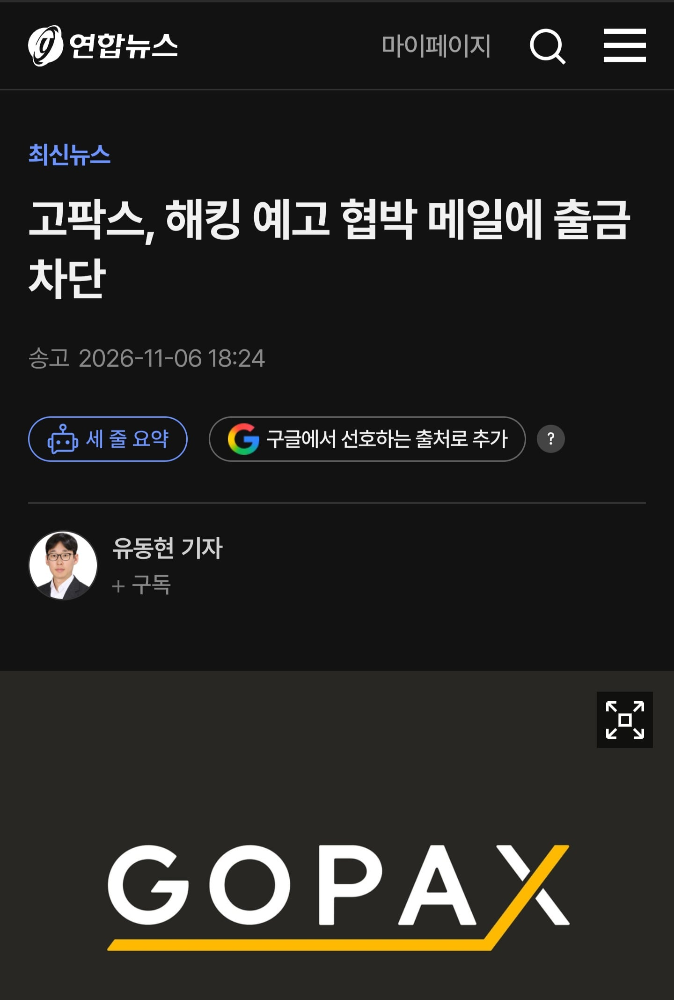

???: 탈 중앙화가 어떻고, 보안에 안전해서 아무나 해킹 못하고, 해킹해도 해쉬값 비교로 해킹여부 확인 할 수 있다!

???: 탈 중앙화가 어떻고, 보안에 안전해서 아무나 해킹 못하고, 해킹해도 해쉬값 비교로 해킹여부 확인 할 수 있다!
Q1. 탈 중앙화의 집착이유
A1. 정부(중앙)가 화폐가치 조작질을 하니까
Q2. 그럼 중앙이 없는데 누가 보증하냐
A2. 이런건 믿음으로 가는거지 (블록체인)
Q3. 왜 모순적으로 보이냐?
A3. 엄마의 잔소리는 듣기싫지만 넘어지면 울면서 엄마를 찾게되는법
코인출금차단? 돈은 출금되겠지?
???: 이게 왜 니 돈이야.
내 똥도 나만 생산할 수 있음
ㅡㅅㅡa
탈중앙화를 와치지만 현실에서 쓰려면 그 무엇보다 중앙화를 꼭 거쳐야 하는 어쩌고
작성자의 선동과 날조로 승부하자 스탠스
아얘 롤백도 때리던데
탈중앙화는 맞는데, 개인은 저런 거래소 없이 코인 거래하기가 쉽지 않음. 이체야 지갑 프로그램에서 주소치면 송금되지만(거래소가 불안하면 노드기반도 안전한건가 모르겠네. 가장 안전한 수십기가이상의 블록체인 자료 다운받은후 진행..) 구매자 매수자 신뢰도 보증은 누가 해주고..
이제는 거래소 털린것도 아니고 예고에 대응하니까
까는건 뭔 개병신 하남자초식임? 존나 저급하네ㅋㅋㅋㅋㅋㅋㅋㅋㅋ진짜 어디아픈새낀가
코인 나락가는거 보면 개꿀잼
한 줄 요약해서 ‘나 돈벌게 해주세요’구나